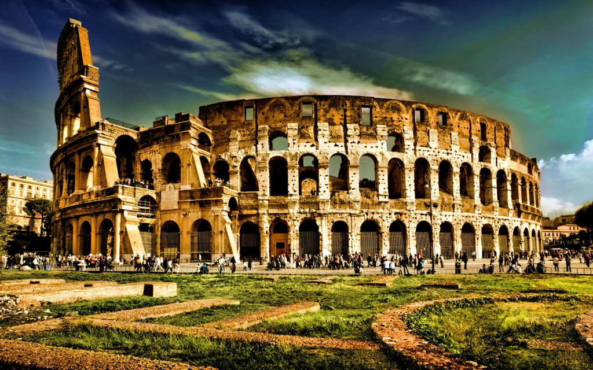
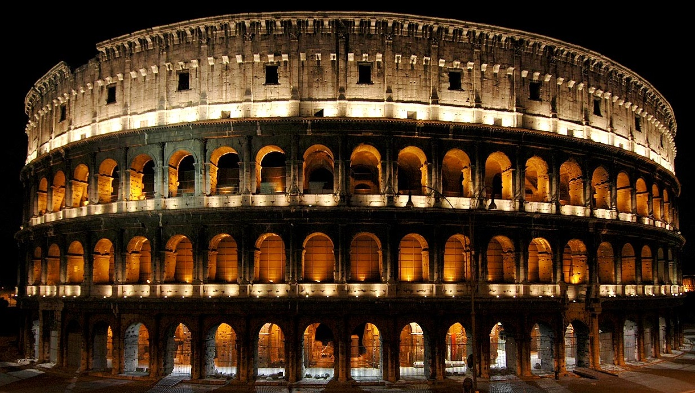
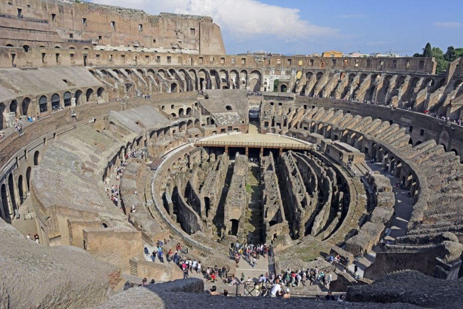

Kristaus Atpirkėjo statula
Koliziejus
Koliziejus dar kitaip vadinamas Flavijaus amfiteatras – didžiausias ir seniausias pasaulyje amfiteatras, esantis Romoje, Italijoje. Garsėjo gladiatorių kovomis tarpusavyje ir prieš laukinius gyvūnus. Vėliau, 404 m., šie kankinimai paskelbti nelegaliais.


Koliziejus pradėtas statyti 72 mūsų eros metais valdant imperatoriui Vespasianui – Flavijų dinastijos pradininkui, baigtas – 80 m., valdant imperatoriui Titui.
Nuo to laiko iki 523 m. Koliziejuje vyko tik medžioklės. Viduramžiais Koliziejus tapo Frangipanų pilimi.
2007 m. liepos 7 d. Romos Koliziejus buvo įtrauktas į įspūdingiausių šiuolaikinio pasaulio statinių sąrašą, vadinamu Naujieji septyni pasaulio stebuklai.[1]
2010 m. rugsėjo mėnesį miesto valdžia nusprendė atidaryti visuomenei Koliziejaus požemius ir leisti juose lankytis turistams pirmą kartą istorijoje.[2]
2000 m. Ridley Scott filme Gladiatorius viena pagrindinių scenų vyko kompiuterinėmis sistemomis atnaujintame Koliziejuje, kuriame veiksmas vyko antrame amžiuje.
